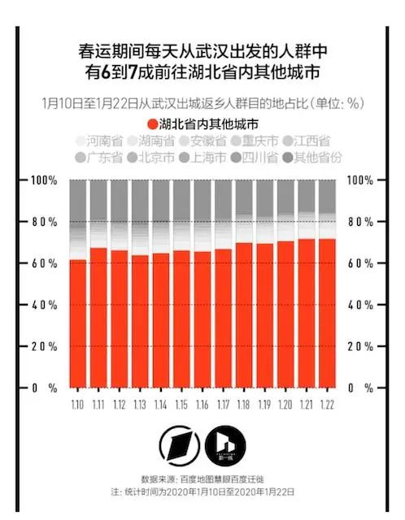
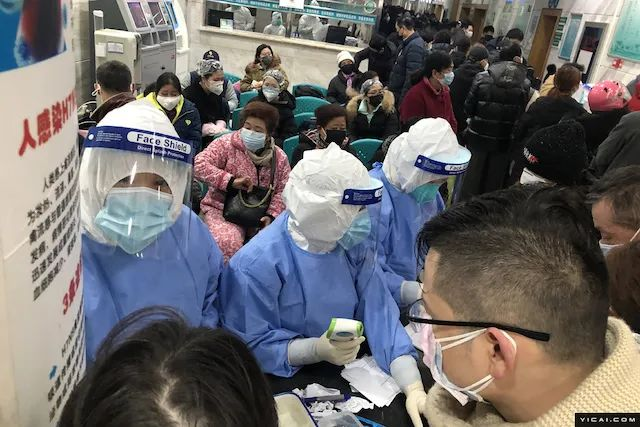
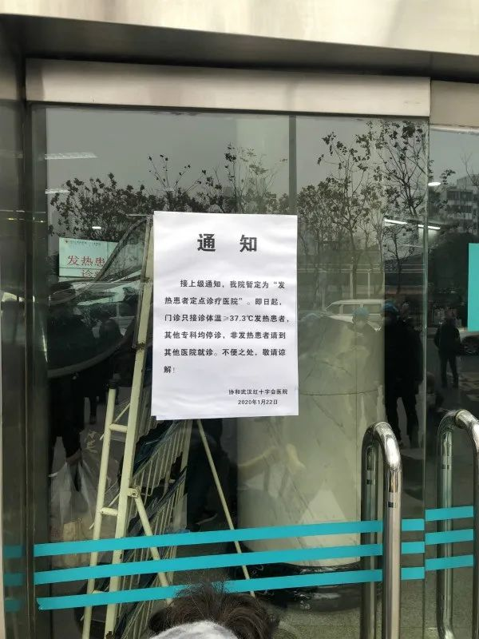

武汉战疫50天：曙光
原文链接 备份链接 24.02.2020本文字数：4461，阅读时长大约7.5分钟 导读：2月19日，也是应勇、王忠林履新一周的日子。这一天，微博平台上有关新冠肺炎患者的求助信息清零了。 作者 | 第一财经 胥会云 北京小汤山医院启用后 …
24.02.2020
本文字数：3621，阅读时长大约6分钟
导读：封城武汉，不是孤城。
作者 | 第一财经 周芳
作为疫情始发地，一座千万人口级别大都市选择封城，这在新中国还是第一次。
但武汉封城为尽可能多地减少传染源向各地输出做出了贡献。包括世界卫生组织总干事谭德塞在内的多位专家学者认为，“封城”将降低疫情蔓延几率，他们称这一举措“非常恰当且非常重要”。
从全国防控疫情层面看，武汉封城是一次战略性决定，但战略终究要配以地方战术来执行，作为史无前例的举动，在执行当中难免出现比较多的纰漏，但这也显示一些部门和基层的防控意识仍有不足，对策不尽周全。
封城至今已经过月，长时间封城带来的一些社会问题也开始显露。中央指导组副组长、中央政法委秘书长陈一新2月22日要求，对长时间封城面临的诸多问题，指挥部要保持清醒头脑，超前研究，拿出有效对策。

八个小时之内发生了什么
1月23日凌晨2时，武汉市疫情防控指挥部发出了第一号通知：当天上午10时，全市公交、地铁、轮渡、长途客运暂停营运，机场、火车站离汉通道暂时关闭。
从决策发布到正式执行，这中间有8个小时的时间差。这个时间，已然足够一些当地民众做出自己的“重大决定”。
据不完全统计，1月23日0时到10时，武汉至少发出列车251列，北到哈尔滨，南达深圳，东到上海，西达成都，至少数十万人通过火车四散全国。
1月23日上午11时许，高德地图显示，武汉各大高速出口收费站均呈现严重的红色拥堵——这基本都是赶着离开武汉的自驾人群。
中午12时左右，第一财经记者曾在武汉“东大门”青龙收费站看到，现场出城闸机通道仍然畅通无阻，车辆可以正常通行，而进城车辆则要接受安检。
这距离封城的截止时间已经过去了两个小时。
在第一财经独家刊发现场视频《武汉东大门出城通道畅通无阻》几小时后，直到当天下午，武汉的公路出城通道才被完全堵死。
下午2时左右，湖北省高速公路管理部门发布消息：省内武汉龚家岭、小军山、汉南、北湖、花山、柏泉、青龙、西湖站入口封闭。京港澳高速武汉西、武汉北、蔡甸、永安收费站口封闭。其他出武汉市的高速公路口也已开始封闭。

航空通道则到1月24日中午才完全关闭。虽然航空公司在23日10时之后取消了大部分涉及武汉的航班，但依据“软着陆”原则以及涉及联程航班等原因，最后一班飞机在24日12时55分才离开武汉天河国际机场。
城门已闭，那些留下来和出不去的人开始涌入超市和药店，紧急采购各种生活物资和防护用品。
在武商量贩、中百仓储、沃尔玛等超市里，人们开始抢菜。“现在不能管价格贵不贵，能抢到吃的不挨饿就不错了。”一位刘女士说。
“我在超市里排了一个多小时的队，只抢到了两根白萝卜。”家住武昌南湖的李女士说。

▲23日，武汉一山姆会员店，货品被抢购一空。
1月23日，第一财经记者在武汉市区的好药师大药房、惠济药店等药店探访。药店工作人员说，当天客流量明显比往常多，顾客集中购买的有常规防护用品、预防感冒药物、抗病毒药物及红外体温计等，防护口罩和手套也销售一空。
对此，湖北省政协常委、湖北省统计局副局长叶青此后表示，市民的恐慌，同之以心，但政府却可以有更多作为——一是保持信息畅通透明和有效沟通，二是医用物资调配效率需提高，市民的情绪安抚、患者筛查和针对性的治疗需要做得更细。
500万人去了哪里
封住武汉，只是控制了原发传染源的继续输出。而那些已经离开武汉但可能部分已经感染病毒的人，到底去了哪里？如何发现和找到他们？这成了后来的重点。
九省通衢的武汉，一直都是全国水陆空交通枢纽，也是中部地区外来人口的重要流入地。
1月26日晚，在湖北省新冠肺炎疫情防控新闻发布会上，武汉市长周先旺表示，因为春节和疫情的影响，截至1月26日有500多万人离开了武汉，还有900万人留在城里。
这500多万人到底去了哪里？一时间引发举国关注。
根据百度迁徙图，武汉封城前一天，即1月22日，离开武汉的人最多，其中流向湖北省内城市的最多，占比达到71.46%。这当中流向孝感（14.56%）、黄冈（14.08%）和荆州（6.11%）的人最多。
此后的疫情演变也证实了外界的担忧。截至2月21日24时，孝感新冠肺炎确诊病例3429，黄冈确诊病例2899，荆州确诊病例1566，这是武汉之外，湖北省内疫情最严重的三个地区。
除湖北省内城市之外，从武汉前往河南信阳、重庆、湖南长沙、北京、上海、河南郑州的人在封城前离汉者中的比例也较高。

第一财经·新一线城市研究所引用百度地图慧眼的迁徙大数据也显示，1月10日至22日春运期间（武汉封城前），每天从武汉出发的人群中有六至七成的人前往湖北省内的其他城市，其次是河南省、湖南省、安徽省、重庆市、江西省。
第一财经记者发现，在武汉封城之前的20多天，最多可以有6万多人从武汉飞到北京，5万多人分别从武汉飞到上海（虹桥+浦东），广州和成都。
这500万离开武汉的人群中，除计划内的春节返乡人员外，也有一些是在获知“封城令”后连夜出城的人。而从此后国内各省疫情通报中可以发现，从武汉过来的人员，占了确诊病例的多数，而且传染给了相当一部分当地市民。
1月21日，一位流行病学专家就曾对此做出预警。他对第一财经表示：“这个病毒的潜伏期中位数是9天，目前的检验设备只能起到对发烧患者的监测，对于病毒携带者没有办法识别，未来可能有更多省份因为人口流动而出现新发病例。”
床位，物资！
封城的武汉开始围剿病毒，但此时疫情底数已经开始快速放大，无论医用物资还是诊疗能力，骤然显得短缺。

▲23日，武汉当地医院发热门诊
为应对发热病人因无序就医可能带来的交叉感染和疾病传播，武汉起初实行发热病人集中就诊的“7+7”新模式。即在城区7家大型医院附近选择了7家二级公立医院作为发热门诊的定点医院，转移病人、腾空病房全部用于接收发热病人，当时计划腾出3400张床位，专门对发热患者进行门诊。
然而，面对呈几何级数增加的新冠肺炎疑似和确诊患者，3400张床位根本不够用。1月23日封城当天，第一财经记者曾致电上述14家定点门诊，除了一家医院尚有少量床位外，其他定点医院都已住满。
和病魔抢时间，武汉医疗系统的救治能力却已经达到极限。网传且后来得到证实的视频显示，一线的医护人员边抹眼泪边工作。恐慌的病患在医院里聚集，更是放大了恐慌情绪。
微信朋友圈里，微博超话里，不断有人求助，请求帮助收治家中的疑似病人。由于医院没有病床接收，很多确诊的轻症患者也不得不选择居家隔离。
2月2日，钟南山在接受采访时曾表示，目前有疑似和已经确诊的患者因病房不够回家自行隔离，这种行为非常危险。
此外，一个新的情况出现了——无暴露史病例在增加，也就是说，部分患者起病症状轻微，无发热。
1月23日，第一财经记者发现，武汉当地医院还在以体温37.3度作为是否接诊的标准。而已确诊病例中，不发烧但被确诊为新型冠状病毒肺炎的患者已经出现，37.3度已经不是判断疑似的标准。这样，被推回家或推往其他医疗机构的患者，有可能失去了第一时间被发现、治疗的机会，病毒也可能因此继续扩散。

第一财经当日发声，呼吁改变武汉“37.3度”接诊标准，及早发现行走的传染源。这一改变对发现病毒携带者尤为重要，但同时也意味着，武汉仍需要更多的床位和医用物资。
既有医院床位不足，新建就是必需之举。越来越多的人士建议武汉借鉴非典时期北京的“小汤山医院”模式，紧急建一所专门的传染病医院，集中收治感染病患。
1月23日，武汉市政府要求中建三局等四个建设单位在6天内，按北京小汤山模式建成火神山医院，地点位于蔡甸区知音湖畔武汉职工疗养院。医院为板房形式，层高一至两层，占地70亩，1000张病床。当晚，施工车辆就到了现场。
1月24日上午，第一财经记者在现场看到，挖掘机经过十多个小时不间断的作业，已进入填埋石料阶段。重型卡车将车厢内的石料卸下，推土机迅速将其填满在地面。现场施工人员介绍，有200余台重型设备在持续作业。
1月25日下午，武汉宣布再建一个小汤山医院——雷神山医院，建筑面积3万平方米，新增床位1300张。
除了床位难题，医用物资短缺也日益凸显。
1月23日，一位政府工作人员对第一财经表示：“我们很缺很缺防护物资，病床也严重不足。”
武汉市第三医院成为定点医院时，医生只有少量N95标准的医用防护口罩，几乎没有防护服和护目镜。
武汉金银潭医院的医生当时说，进入病房前，全身要消毒，4小时一个班，当中无法喝水（防止感染），也无法上厕所（节省防护服），高强度的4小时下来，整个人在厚重的防护服内大汗淋漓。4小时甚至10小时不喝水不进食地工作，后来成为一线医护人员——包括后续赶来支援的医疗队员的惯例，因为防护服太缺了。
封城后的几天内，武汉有8家医院相继发出公告，向社会各界募捐护目镜、N95级别医用防护口罩、一次性外科手术口罩、医用帽、防护服、手术衣、防冲击眼罩、防护面罩等物资。
据有关部门测算，截至1月31日，湖北本省只能生产医用口罩800万个，防护服200万套，红外测温仪1200套，不能满足全省防疫需要。
彼时的武汉，无论医用物资还是诊疗能力，亟待全国驰援。
此后，浩浩荡荡的医疗大军开始增援武汉，截至2月17日，全国各地已经派出3.2万余名医务人员来支持湖北武汉，无数的物质和医疗器械向武汉发送。
封城武汉，不是孤城。
【相关阅读】


原文链接 备份链接 24.02.2020本文字数：4461，阅读时长大约7.5分钟 导读：2月19日，也是应勇、王忠林履新一周的日子。这一天，微博平台上有关新冠肺炎患者的求助信息清零了。 作者 | 第一财经 胥会云 北京小汤山医院启用后 …
原文链接 备份链接 *************▲*************2月18日，青山区工人村街道青和居社区第三网格网格员在挨家排查。 （新华社/图） 全文共8426字，阅读大约需要16分钟。 新建或改造医院的速度，远比不上确诊病 …
原文链接 备份链接 昨天，我们发起了征集，请身在疫区的同胞、奋战在疫情第一线上的医护人员、全国各地留守家中防疫的人们讲述这个春节发生的真实故事，在后台收到的近百份留言中，我们筛选并刊登如下，我们是倾听者，也是见证者—— 01 这个春节，是 …
原文链接 备份链接 文 | 王彦入 王丹妮 程静之 殷盛琳 李晓芳 周航 叶雯 曾宪雯 编辑 | 王珊 陶若谷 33岁的刘科戴上两层口罩独自走进地铁，夹杂在路人中间。像他这样拉着行李箱的人并不少见，彼此间默契地保持着距离。三天前，他刚刚从 …
原文链接 备份链接 经历了“封城”一个月的武汉，到底怎么样了? 全文2100字，阅读约需4分钟 点击下图进入阅读新京报特别策划 *数据新闻编辑 **陈华罗、李媛 新媒体设计 高俊夫、李亚珍 校对 何燕* ▲300秒回顾武汉战疫：宏大数 …